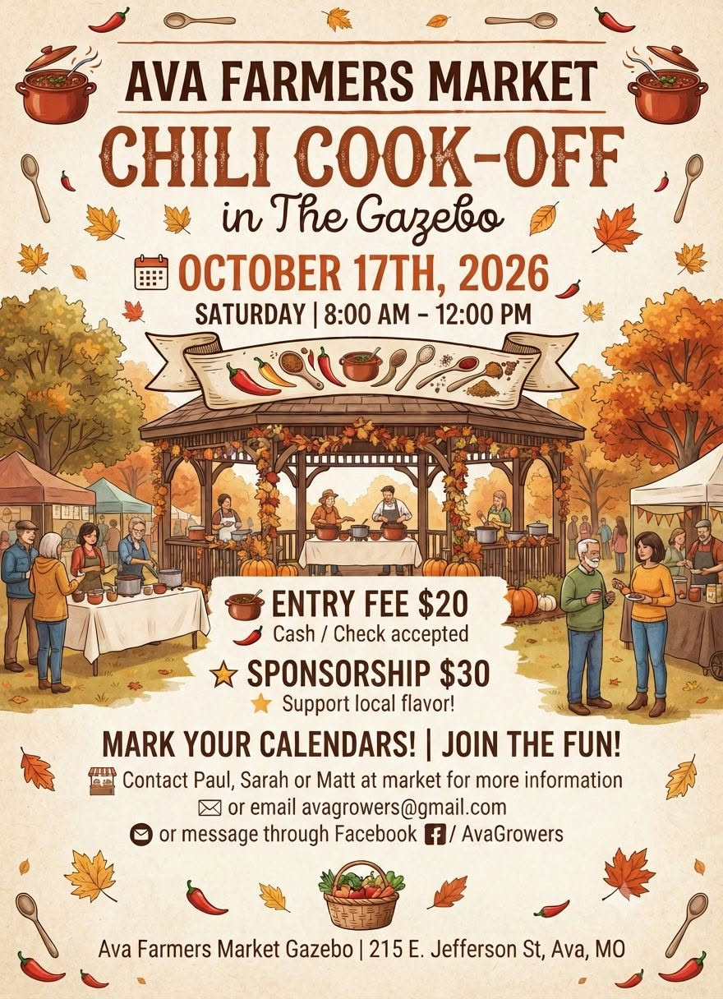

Saturdays on the square
Grown here.
Made here.
The Ava Farmers Market is a growers and makers market on the square in Ava, Missouri. Produce, plants, crafts and small animals, brought in by the people who raised and made them. Run by the Ava Growers Project, Inc., a 501(c)(3) nonprofit.

- When
- Saturday mornings8am to 12pm
- Season
- April to OctoberEvery Saturday
- Where
- The Ava squareAva, Missouri 65608
- Who runs it
- A nonprofitAva Growers Project, Inc.
What you’ll find
What is on the tables depends on the week and the season. Across a summer, the market carries:
- Fresh produce
- Plants and nursery stock
- Handmade crafts
- Small animals
- Meats
- Eggs
- Local honey
- Breads, pies and baked goods
- Jams and jellies
- Herbs
- Flowers

Chili Cook-Off in the Gazebo
Bring a pot and compete, or come and taste. Held in the gazebo during market hours.
Ask Paul, Sarah or Matt at the market, email avagrowers@gmail.com, or message the Facebook page.
Why a market matters here
The Ava Growers Project runs the market as a nonprofit, not a business. The point is a shorter distance between the people who grow food in Douglas County and the people who eat it.
Straight from the grower
You can ask how something was grown, and the person who grew it is standing there to answer.
Money that stays local
What you spend goes to households in and around Ava rather than out of the county.
Makers alongside growers
Crafts and handmade goods share the square with the produce, which is what makes it a growers and makers market.
Advice you can use
University of Missouri Extension and other specialists speak at the gazebo and answer questions.
Sell with us
Growers, bakers and crafters from the area are welcome, and you do not need to arrange anything in advance to try it.
Selling for a single Saturday? Just come and see us on the square that morning. A one-day stall is $5, paid at the market. Nothing to book, nobody to ring first. We will have a short form to go through the market rules, only locally made goods may be sold.
Coming back week after week? You can also become a member of the Ava Growers Project without selling anything — membership supports the market and the Project’s work in the county.